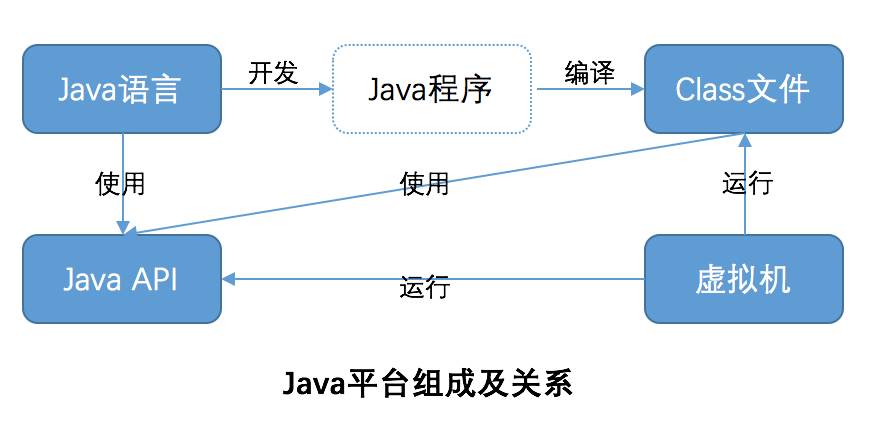

本文是对Java平台系统的基本知识的汇总和个人理解，此处的内容是针对旧版的Java
Java平台系统中由4个独立并相关的技术构成
- Java程序设计语言
- Java Class文件
- Java API(rt.jar等)，提供访问系统底层资源的统一接口
- Java虚拟机

Java平台的目标 平台无关性，安全性和网路移动性
现代的硬件发展趋势和软件发展趋势 需要大型系统能实现 平台无关性，安全性和网路移动性
- 平台无关性：程序一次开发可以在多种目标硬件平台都能使用、执行，不需要针对特定硬件平台做移植、定制
- 安全性：通过某种方式获得的程序的可校验，权限的可控，不同源的程序的隔离等
- 网路移动性：运行的状态，可执行的代码等 能在网路的不同节点中传递和执行，这是3种特性中的最高目标，前两种特性是这一特性的基本要求
Java平台通过4个技术的结合来实现其目标
java虚拟机
java虚拟机的主要功能是 加载class二进制(类加载器体系) 和 执行字节码(执行引擎)
类加载器体系包括java平台默认实现的启动类加载器 和 用户实现的自定义类加载器，通过用户提供的类加载可以更加灵活的实现从不同地方(网路，文件系统，动态生成等) 动态地 加载类
执行引擎有三种执行形式：
- 解析执行
- 编译执行
- 自适应优化执行(动态编译高频率执行代码)
java虚拟机是 java平台 实现 平台无关性，安全性和网路移动性 的核心
- Java虚拟机的功能有统一的规范，但不同平台上的实现可根据平台实现
- 不同的类加载加载的类在不同的命名空间，不能互相调用，实现隔离，所以安全
- 允许自定义的加载器从网路获取类所以实现网络移动性
java class文件
java class文件更好的支持java平台的 平台无关性 和 网路移动性
- java class是一种与平台无关的二进制服务形式(反例是c，c++的编译结果是平台相关的二进制代码)
- java class文件格式紧凑，适合网路传输 和 按需下载，实现了网路移动性
java API
java API(rt.jar等)更好的支持java平台的 平台无关性 和 安全性
- java API封装了对底层系统资源的调用，对java程序提供统一的接口，实现平台无关
- 当java API进行任何潜在危险操作(硬盘io等)都会查询安全管理器和控制访问器来获取执行操作的权限
java语言
- java语言用来开发Java平台(平台无关，安全性，网络移动)应用
- java语言是一种设计良好、开发效率高的语言，所以也非常适合用于开发不一定用到java平台特性的应用
设计良好、开发效率的体现：
- 是面向对象语言，所以比面向过程的抽象程度更高，更容易开发重用度更高的程序
- 垃圾收集，不用开发人员自己管理垃圾
- 去除指针概念，减少开发人员的失误
- 通过运行时类型检查抛异常来法制程序崩溃
Java的劣势
- Java虚拟机执行速度可能较编译执行的程序慢
- Java虚拟机的垃圾收集引入了性能的不确定性
- Java虚拟机的线程管理说明模糊不清，使程序员无法了解如何调度线程
- Java的平台无关性导致API的设计存在最小公分母问题
- Java的class文件容易逆向工程，被窃取开发成果